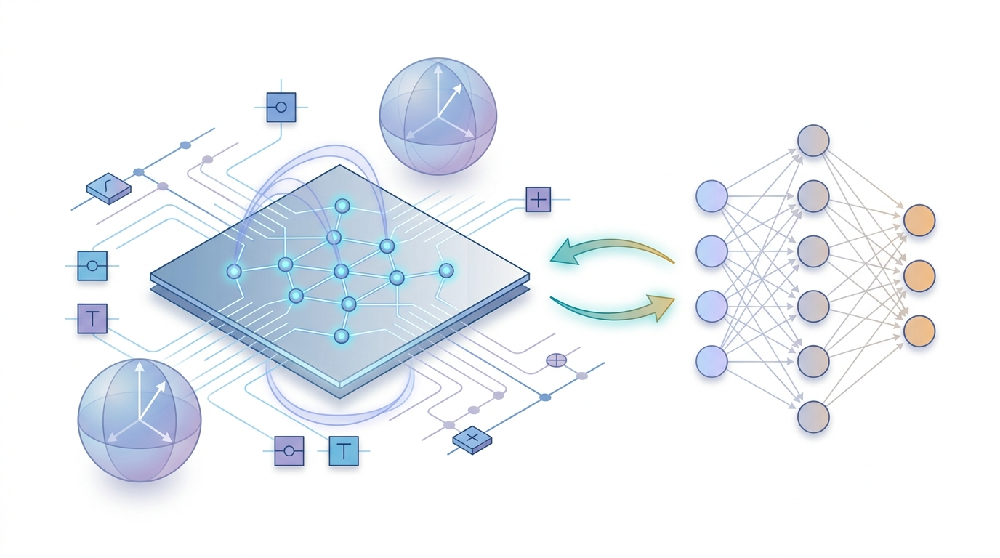

Quantum Computing
Bridging Algorithms and Architectures

Overview
Recent advances in quantum technologies have accelerated research into computational models that surpass classical limitations. Quantum computing harnesses principles such as superposition and entanglement to solve problems that are infeasible for classical machines.
My research focuses on designing and analyzing quantum algorithms and investigating scalable quantum hardware systems. I study quantum circuit design, qubit behavior through Bloch sphere modeling, and surface code-based error correction. This work aims to bridge theoretical quantum algorithm development with practical implementations on NISQ (Noisy Intermediate-Scale Quantum) devices.
Fault Tolerance
I explore fault tolerance mechanisms across various computing paradigms, focusing on how different systems ensure reliability in the presence of errors. In embedded systems, where resources are constrained, I study lightweight software-based techniques for protecting against soft errors. In classical computing, I examine fault recovery methods such as hardware redundancy and consensus protocols. In quantum computing, I analyze how logical qubits are stabilized using quantum error correction codes to manage the inherent fragility of physical qubits.
My work aims to systematically understand and compare these distinct approaches to fault tolerance, bridging practical engineering with theoretical foundations.
Federated Quantum Learning
I explore the integration of quantum computing with federated learning to enable secure and privacy-preserving distributed model training. In this paradigm, local devices collect and encode sensitive data into quantum states, ensuring that raw information never leaves the device. Each device performs local quantum training, leveraging quantum circuits to extract model updates while maintaining data confidentiality.
These updates are then transmitted to a central server, where they are aggregated to form a global model without accessing any original data. My work examines how this approach combines the computational advantages of quantum systems with the collaborative benefits of federated learning, aiming to enhance security, efficiency, and scalability in next-generation AI systems.
Tools & Platforms
Related Publications
- "Quantum-Secured Hybrid Communication System for Tactical Military Networks: Implementation and Performance Analysis of BB84 Protocol Based on Penny Lane" — JKICS 2026
- "Quantum Noise-based Adversarial Attack on Diffusion Models and Analysis of Defense Mechanisms" — KIIT-JICS 2026
- "Classification of Pneumonia in Chest X-rays Using a Hybrid Neural Network Based on a 3-Qubit Quantum Circuit" — KSLI Conference 2025
Reading List
- Brief Introduction to Quantum Computing for Undergraduate Students: Lecture One — Li Chen, ACM
- Quantum Computing in the NISQ Era and Beyond — John Preskill, Quantum 2018
- Quantum Error Correcting Codes — A.R. Calderbank & Peter W. Shor, Physical Review A 1996
- Quantum Computation and Quantum Information (Textbook) — Michael A. Nielsen & Isaac L. Chuang
- Quantum Machine Learning: What Quantum Computing Means to Data Mining — Peter Wittek
- Parameterized Quantum Circuits as Machine Learning Models — Maria Schuld et al.